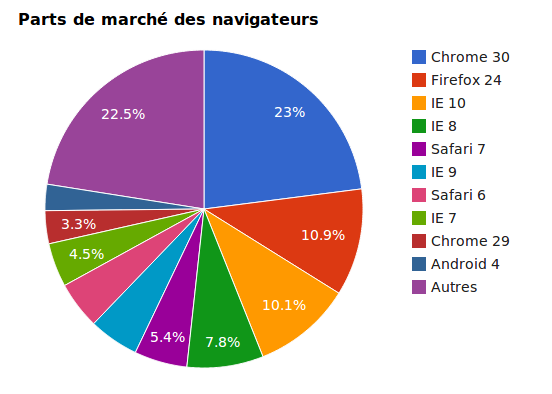
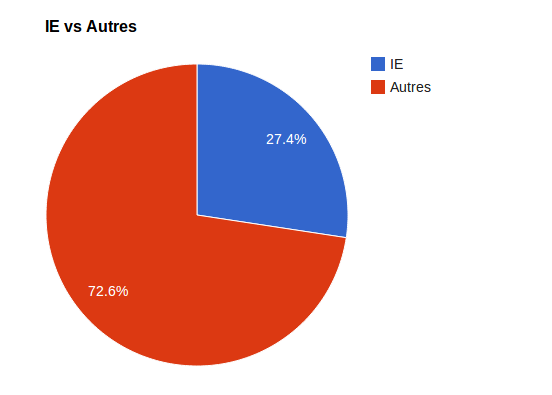
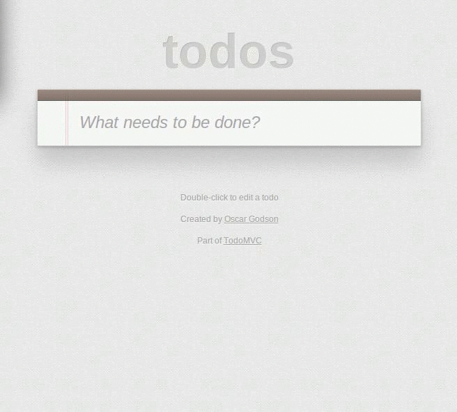
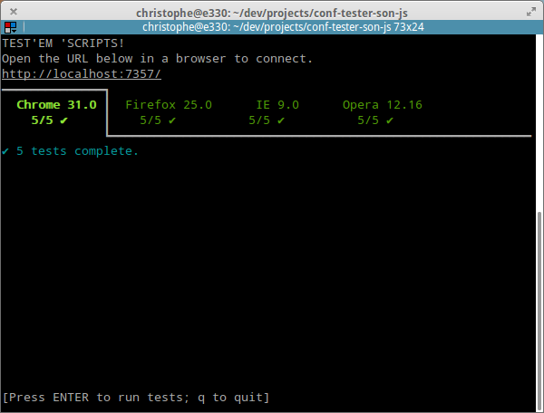
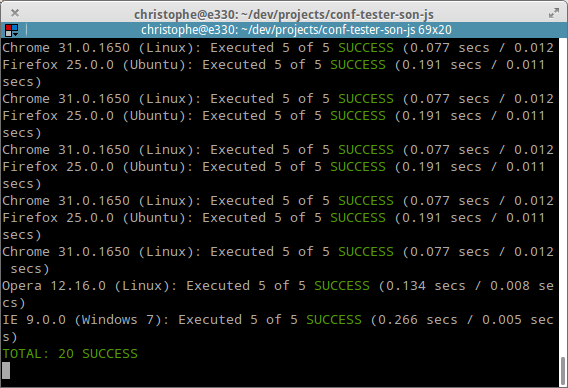

Tester son code JS dans tous les navigateurs ...
automatiquement !
Christophe PROMÉ et Nicolas MEDDA
Agenda
Pourquoi Tester ?
Parce que lorsque l'on se rend compte d'un bug alors que le produit est en production depuis 2 semaines, c'est pas très cool.
Pourquoi Tester ?

source : www.w3counter.com
Pourquoi Tester ?

source : www.w3counter.com
Pourquoi Tester ?

source : www.caniuse.com
Que Tester ?
Son code abruti !
Test Unitaire
Test d'intégraion
Test d'Interface
Test fonctionnel
TDD ici aussi !
Où l'on parle bonnes pratiques
Les outils
Testem

Karma

Merci !
Et testez bien !